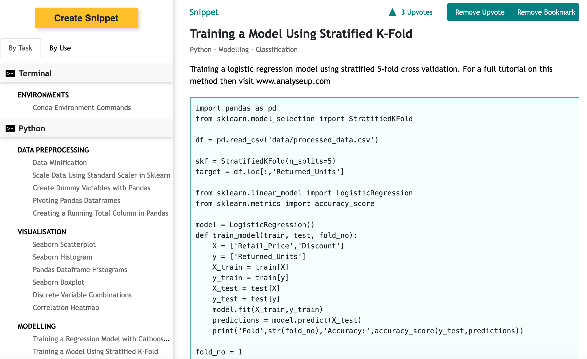

.png)
Ok, so this might seem like an obvious one but Github is much more than just version control. Aside from being able to fork useful projects from other data scientists you can also setup repositories that act as templates for your projects.
Each project template can contain a project structure of folders and files for different elements of your project such as folder to store your models, scripts for training and files that hold your project requirements and documentation. For an example of a good project structure then have a look at this article by Kurtis Pykes. You can even have different templates for different types of projects i.e. forecasting, computer vision etc.
A good practice for when you’ve finished a project or a course is to take useful code snippets from your work that you might use in future projects. Datasnips is a platform for storing, organising and sharing data science and AI code snippets.
Your snippets get grouped by use (i.e. computer vision, NLP etc) or by task (importing data, visualisation etc) enabling you to easily reference and quickly copy your code snippets into future projects whenever you need them rather than coding from scratch. You can also bookmark useful code snippets from other users on the platform.
For beginners, being able to save and organise snippets of code you pick up as you learn is extremely valuable and helps you quickly reference what you have done previously as you build on your knowledge.
Trello is a task management app and while not specifically built for data scientist or developers of any kind, it’s still an extremely useful tool for helping manage a data science project, especially if the project is large and complex or involves collaboration.
Trello works by letting you build different boards for each project and then uses lists and cards to organise different stages and tasks of your project. This enables you to keep track of where you are in a project, what needs to be done and what the priorities are.
An additional use for data scientists, especially those just getting into the field and embarking on a programme of self study is to keep track of your curriculum and make it easier to plan a pathway through the many courses and resources available online and elsewhere.